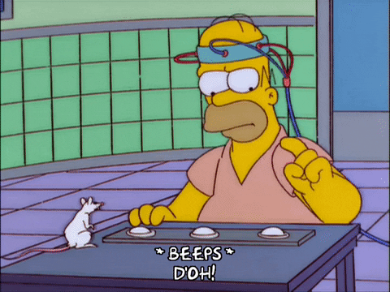
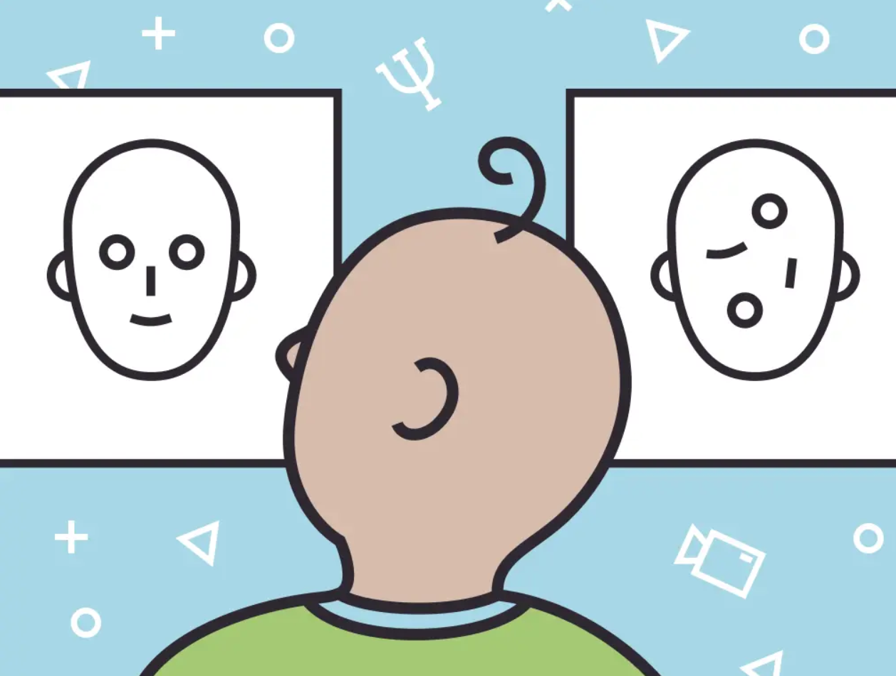
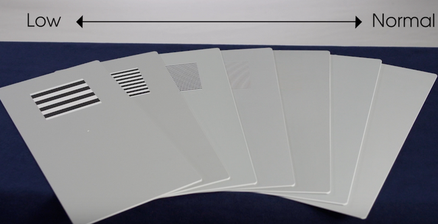
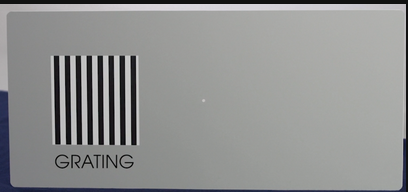

Methods in Developmental Psychobiology
From behavior to brain activity
Scuola di Psicologia, University of Florence
Methods in developmental psychobiology
Developmental psychobiology asks how behavior, cognition and brain function change during development.
Studying infants and young children creates a special methodological problem: they cannot always understand instructions, give verbal reports, or perform complex tasks.

Researchers therefore infer developmental processes from several complementary signals:
- spontaneous or learned
behavior physiologicalresponses- changes in
brain structure and function
Behavioral methods
Use behavior as an index of perception, attention, learning or memory. Examples:
- looking
- orienting
- habituation
- head turning
What can we measure?
Peripheral physiological methods
Measure changes in bodily responses associated with attention or arousal.
Examples:
- heart rate
- sucking behavior
- pupillometry
- galvanic skin response
Neural recording
Measure signals generated by neural activity.
Examples:
- EEG
- MEG
Neuroimaging
Measure brain structure or physiological consequences of neural activity.
Examples:
- MRI / fMRI
- fNIRS
- PET
Behavioral methods
When a participant cannot verbally report what they perceive or remember, behavior itself becomes the dependent variable.
The central logic is simple:
stimulus or manipulation -> measurable behavior -> inference about an internal process
Useful measures must be:
- simple enough for the developmental age
- reproducible
- sensitive to changes in attention, perception or learning
- interpretable using appropriate control conditions
The orienting response
The orienting response is the coordinated response produced when a novel or salient event captures attention.
It can include:
- turning the head or eyes toward the stimulus
- changes in looking time
- changes in heart rate
- changes in ongoing behavior
The response provides a simple way to ask whether an infant has detected and attended to a stimulus.
Expectancy violation
Infants often look longer at events that are unexpected relative to events that are consistent with an established expectation.
A typical experiment compares:
expected event
with
unexpected / impossible event
Longer looking at the unexpected event can indicate that the infant had formed an expectation about what should occur.
Interpretation requires careful controls because differences in looking can also be influenced by perceptual salience.
Habituation
If the same stimulus is presented repeatedly, the infant’s response often becomes progressively smaller.
This reduction is called habituation.
Habituation indicates that the stimulus is no longer treated as completely new.
The logic can be used to test basic forms of memory and whether the infant can discriminate between two stimuli.
The logic of habituation
1. Baseline
Measure the initial response.
2. Habituation
Present the same stimulus repeatedly until the response decreases.
3. Test
Present a new stimulus.
If the response recovers:
the infant detected a difference between the habituated and test stimuli.
If the response remains low:
the two stimuli may not have been discriminated, or the new stimulus may not have been sufficiently salient.
Conditioned head turning
In conditioned head-turning, an infant learns to make a head turn when a relevant change in a stimulus is detected.
A typical auditory version works by:
- presenting a repeating sound
- changing the sound
- reinforcing a correct head turn with an interesting visual event
Once the response is learned, head turning can be used to test auditory discrimination.
Preferential looking
Preferential looking measures how long an infant looks at alternative visual stimuli.
Two stimuli are presented simultaneously.
If looking is systematically biased toward one of them, the difference can reveal:
- visual discrimination
- perceptual preference
- familiarity or novelty effects
The infant does not need to understand verbal instructions.
Looking behavior itself provides the response.

Teller acuity cards
Teller acuity cards use preferential looking to estimate visual acuity in infants and other non-verbal participants.
Each card contains:
- a uniform gray region
- a striped grating on one side
Infants tend to orient toward the grating when its spatial frequency can still be resolved.
Progressively finer gratings are presented until the observer can no longer reliably determine where the infant is looking.
This provides an estimate of visual acuity.


Visual paired comparison
The Visual Paired Comparison task uses spontaneous looking preferences to study recognition and memory.
Familiarization
The infant is first exposed to a stimulus.
Test
The familiar stimulus is then presented together with a novel stimulus.
A difference in looking time indicates that the infant distinguishes the familiar item from the novel one.
Image: familiarization followed by familiar-versus-novel test
Suggested file: images/4_methods_visual_paired_comparison.png
Physiological methods
Behavior is only one possible window onto development.
Changes in the body can also reveal whether a stimulus has been detected and how strongly it engages the organism.
Developmental studies can measure physiological signals such as:
heart rate- respiration
- pupil size
- skin conductance
- sucking rate or sucking pressure
These measures are particularly useful when an overt behavioral response is small, unreliable or unavailable.
Heart rate and attention
Heart rate changes dynamically with arousal, orienting and attention.
During visual attention in infants, sustained engagement is often associated with a deceleration of heart rate relative to baseline.
The signal is informative but not specific:
a change in heart rate cannot by itself identify the exact cognitive process that produced it.
Image: heart-rate change during pre-attention, sustained attention and attention termination
Suggested file: images/4_methods_heart_rate_attention.png
Non-nutritive sucking
Newborns spontaneously produce non-nutritive sucking when given a pacifier or nipple without feeding.
A pressure sensor can measure:
- sucking frequency
- sucking amplitude
- pauses between sucking bursts
Because sucking can be recorded from very young infants, it provides a useful response for studying perception, learning and preference shortly after birth.
Image: newborn with a pacifier connected to a sucking-pressure sensor
Suggested file: images/4_methods_non_nutritive_sucking.png
High-amplitude sucking paradigm
In the high-amplitude sucking paradigm, presentation of a stimulus is made contingent on sufficiently strong sucking.
Baseline
The infant’s spontaneous sucking amplitude is measured.
Contingency
Sucks above a predefined threshold trigger a sound or another stimulus.
Changes in sucking can then reveal preference, discrimination or habituation.
Image: high-amplitude sucking experimental timeline
Suggested file: images/4_methods_high_amplitude_sucking.png
Listening to speech at birth
Vouloumanos & Werker, 2007
Question
Do human newborns show a spontaneous preference for speech?
Method
High-amplitude sucking was used to let newborns control presentation of either speech or acoustically matched non-speech sounds.
Result
Newborns adjusted their sucking behavior so that they heard speech more often than non-speech analogues.
Image: Vouloumanos & Werker high-amplitude sucking result
Suggested file: images/4_methods_vouloumanos_werker.png
A very simple motor response can therefore be used to investigate a sophisticated developmental question.
Every method has a scale
Different methods observe neural systems at very different spatial and temporal scales.
Some methods have excellent temporal resolution but relatively poor spatial localization.
Example: EEG
Other methods provide much better anatomical localization but measure slower physiological processes.
Example: fMRI
Image: comparison of spatial and temporal resolution across neuroscience methods
Suggested file: images/4_methods_spatiotemporal_resolution.png
Electroencephalography
Electroencephalography (EEG) records differences in electrical potential from electrodes placed on the scalp.
The first human EEG recordings were obtained by Hans Berger in 1924 and published several years later.
EEG provides a direct measurement of electrical activity generated by populations of neurons, with millisecond temporal resolution.
Image: Hans Berger and an EEG recording setup
Suggested file: images/4_methods_eeg_history.png
What does EEG measure?
Scalp EEG mainly reflects the summed electrical fields produced by synchronized postsynaptic currents in large populations of cortical neurons.
Electrodes do not record the activity of a single neuron.
They measure the population-level electrical signal that reaches the scalp.
EEG therefore has:
- excellent
temporal resolution - relatively limited
spatial localization
Image: EEG electrodes, amplifier and multichannel recording
Suggested file: images/4_methods_eeg_recording.png
Why EEG is useful in developmental research
Advantages
- non-invasive
- silent
- millisecond temporal resolution
- can be used during passive stimulation
- suitable for infants and children
Limitations
- sensitive to movement and muscle artifacts
- spatial localization is limited
- developmental changes in skull, head size and brain anatomy affect the recorded signal
EEG is particularly valuable when the experimental question concerns when neural processing occurs.
Spontaneous EEG
EEG can be studied even without presenting discrete experimental stimuli.
Visual inspection
Examine characteristic patterns in the continuous signal.
Spectral analysis
Decompose the signal into its frequency content and quantify activity across different frequency ranges.
Image: continuous EEG and corresponding power spectrum
Suggested file: images/4_methods_eeg_spontaneous.png
Event-related potentials
An event-related potential (ERP) is obtained by aligning EEG activity to repeated events and averaging across trials.
Averaging reduces activity that is not consistently time-locked to the event and emphasizes the reproducible neural response.
ERP components can be characterized by:
- latency
- amplitude
- polarity
- scalp distribution
Image: repeated EEG trials aligned and averaged into an ERP
Suggested file: images/4_methods_erp_average.png
Early and late ERP components
Earlier components
Often more strongly related to relatively early sensory processing.
In the original course distinction: approximately <150 ms.
Later components
More often reflect additional stages of perceptual, attentional or cognitive processing.
In the original course distinction: approximately >150 ms.
These temporal boundaries are approximate and component latencies change with age, task and sensory modality.
Mismatch negativity
The mismatch negativity (MMN) is an event-related response elicited when an infrequent auditory event violates a regular sequence.
A typical sequence contains:
standard standard standard deviant standard …
Because it does not require an explicit behavioral response, MMN is especially useful for investigating auditory discrimination in developmental populations.
Image: auditory oddball sequence and MMN difference waveform
Suggested file: images/4_methods_mmn.png
Magnetoencephalography
Magnetoencephalography (MEG) measures the tiny magnetic fields generated by neuronal electrical currents.
Like EEG, MEG provides millisecond temporal resolution and directly reflects electromagnetic consequences of neural activity.
MEG can provide useful cortical source localization, but the equipment is expensive and head movement is a major challenge in developmental studies.
Image: child or adult inside a MEG system
Suggested file: images/4_methods_meg.png
Direct and indirect measures of neural activity
EEG / MEG
Measure electrical or magnetic signals generated directly by neural activity.
Fast: milliseconds.
fMRI / fNIRS / PET
Measure physiological consequences associated with neural activity.
Examples:
- blood oxygenation
- blood flow
- metabolism
The distinction is important:
a strong imaging signal does not represent action potentials directly, but a physiological process coupled to neural activity.
Neurovascular coupling
An increase in local neural activity changes the metabolic demand of the tissue.
Through neurovascular coupling, active brain regions produce local changes in:
- cerebral blood flow
- blood volume
- oxygenated hemoglobin
- deoxygenated hemoglobin
These vascular changes provide the physiological basis for fMRI and fNIRS.
Image: neuron, astrocyte and local blood vessel illustrating neurovascular coupling
Suggested file: images/4_methods_neurovascular_coupling.png
Magnetic resonance imaging
Magnetic resonance imaging (MRI) can provide both structural and functional information without ionizing radiation.
Structural MRI
Describes anatomy and tissue properties.
Examples:
- cortical anatomy
- brain volume
- developmental changes in tissue contrast
Diffusion MRI / DTI
Uses water diffusion to investigate the organization of white-matter pathways.
Functional MRI (fMRI)
Uses changes in the BOLD signal to infer changes in local neural activity.
Image: structural MRI, diffusion image and fMRI activation map
Suggested file: images/4_methods_mri_types.png
The BOLD signal
BOLD means Blood-Oxygen-Level-Dependent signal.
Increased neural activity usually produces a local vascular response in which blood flow increases more than oxygen consumption.
The relative concentration of deoxygenated hemoglobin therefore changes.
fMRI detects the resulting change in the MR signal.
It is therefore an indirect measure of neural activity.
Image: neural activity -> hemodynamic response -> BOLD signal
Suggested file: images/4_methods_bold.png
fMRI has a delayed response
The neural event itself occurs on a millisecond timescale.
The hemodynamic response measured by fMRI develops over several seconds.
This gives fMRI:
- high spatial localization relative to EEG
- much poorer temporal resolution than EEG or MEG
The measured BOLD response is therefore a temporally blurred physiological consequence of neural activity.
Comparing experimental conditions
Functional neuroimaging usually asks whether activity differs between carefully selected experimental conditions.
A simplified subtraction logic is:
experimental condition - control condition
-> activity associated with the process that differs between them
The quality of the inference therefore depends strongly on the control condition.
The two conditions should differ in the process of interest while matching as many irrelevant factors as possible.
Image: two experimental conditions and their fMRI contrast
Suggested file: images/4_methods_subtraction.png
Functional near-infrared spectroscopy
fNIRS uses near-infrared light delivered through the scalp to estimate changes in oxygenated and deoxygenated hemoglobin.
It therefore measures a hemodynamic response related to neural activity, conceptually similar to fMRI.
Advantages for developmental research:
- non-invasive
- silent
- portable
- relatively tolerant of naturalistic testing
- well suited to infants
Image: infant wearing an fNIRS cap
Suggested file: images/4_methods_fnirs.png
What can fNIRS measure?
Strengths
- better temporal sampling than typical fMRI
- easier to use during social interaction
- can be used while infants sit with a caregiver
- relatively low experimental burden
Limitations
- slower than EEG because it measures hemodynamics
- lower spatial resolution than MRI
- primarily sensitive to superficial cortex
- affected by scalp blood flow and movement
fNIRS trades anatomical coverage for accessibility in developmental populations.
Positron emission tomography
Positron emission tomography (PET) uses radioactive tracers to measure physiological processes such as metabolism or receptor binding.
For metabolic imaging, a radiolabeled molecule is administered and its regional accumulation is detected.
PET is an indirect measure of neural function with relatively poor temporal resolution.
Image: PET scanner and metabolic brain image
Suggested file: images/4_methods_pet.png
Because PET requires exposure to ionizing radiation, its use in healthy developmental populations is strongly limited.
Transcranial magnetic stimulation
Transcranial magnetic stimulation (TMS) is not primarily a recording method.
It is a perturbation method.
A rapidly changing magnetic field induces an electrical field in cortical tissue.
This can transiently modify activity in the stimulated region.
TMS can therefore address a different question:
Is a particular brain region causally involved in a behavior or cognitive process?
Image: TMS coil positioned over the scalp
Suggested file: images/4_methods_tms.png
Correlation versus causation
Recording methods
EEG, MEG, fMRI and fNIRS reveal that a neural signal is associated with a stimulus or behavior.
Perturbation methods
TMS changes neural activity and tests whether this change modifies behavior.
This provides stronger evidence for a causal contribution.
A complete understanding often requires combining measurement with experimental manipulation.
Choosing the appropriate method
The best method depends on the question.
Ask:
- Do I need millisecond timing?
- Do I need precise anatomical localization?
- Do I need a direct or indirect neural measure?
- Can the participant remain still?
- Can the participant understand instructions?
There is no universally “best” technique.
Each method samples a different part of the chain:
stimulus
-> neural activity
-> physiological response
-> behavior
The strongest developmental conclusions often come from converging evidence across different methods.